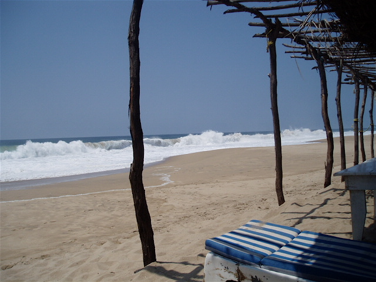
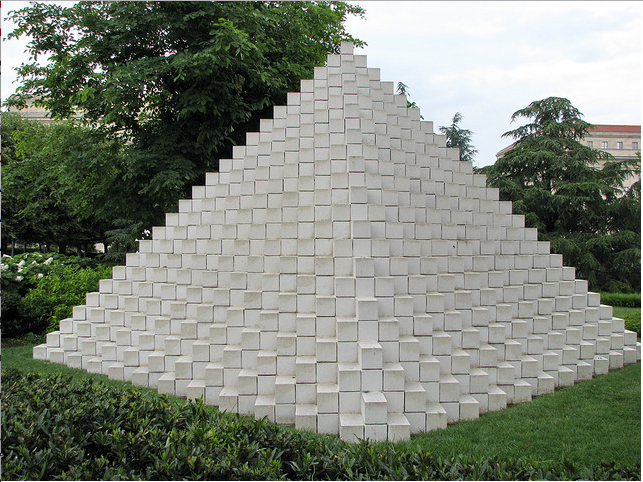
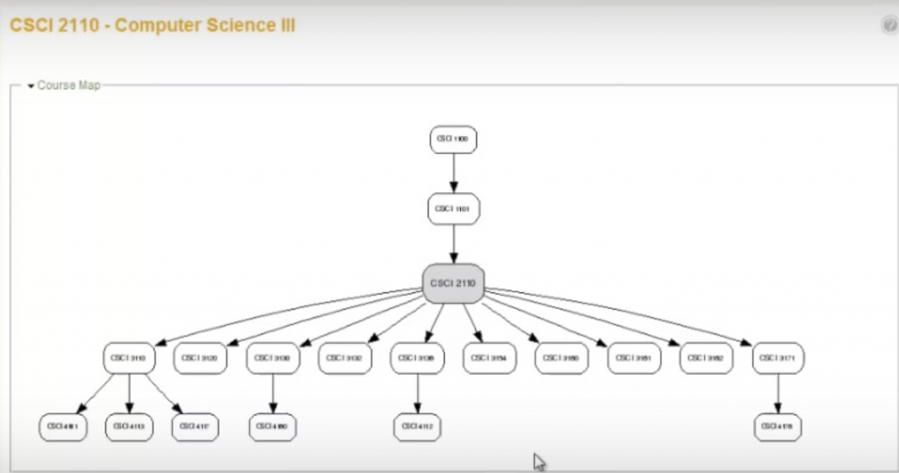

11.5 As implicações do ‘aberto’ para o design de disciplinas e programas: rumo a uma mudança de paradigma?


Imagem: © Tony Bates 2015 CC BY-NC

Embora nos anos recentes os MOOCs, as tecnologias emergentes e a inteligência artificial tenham concentrado a atenção dos meios de comunicação, considero que os desenvolvimentos nos domínios dos recursos educacionais abertos, livros didáticos abertos, pesquisa aberta e dados abertos assumirão um papel muito mais relevante e revolucionário. Apresentam-se as razões para esta perspectiva.
11.5.1 A quase totalidade do conteúdo educativo será gratuita e aberta
Progressivamente, a maior parte do conteúdo acadêmico estará acessível e disponível gratuitamente na internet para qualquer cidadão. Esta dinâmica poderá representar uma redistribuição de poder do docente para os estudantes. Estes deixarão de depender das aulas presenciais expositivas dos professores como fonte exclusiva de informação. Diversos alunos prescindem já de assistir a aulas convencionais nas suas instituições pelo fato de a matéria ser exposta com maior clareza em portais de OpenCourseWare, MOOCs ou na Khan Academy. Se os estudantes podem acessar gratuitamente as melhores aulas e recursos didáticos a nível global, incluindo os das universidades da Ivy League, por que optariam pela exposição de conteúdos de um docente comum nas suas universidades locais? Qual o valor acrescentado que esse professor lhes proporciona?
Identificam-se respostas consistentes para esta questão, contudo elas exigem uma reflexão sobre a forma como o conteúdo será estruturado e mediado pelo docente de modo a apresentar-se singular face ao que se encontra acessível na internet. No caso de professores pesquisadores, esta singularidade pode assentar no acesso a investigações em curso ainda não publicadas; para outros docentes, residirá na sua perspectiva crítica sobre um tema ou na articulação interdisciplinar de saberes. O que não se revelará aceitável para os estudantes é a mera reprodução de conteúdos padrão facilmente localizáveis na web com melhor qualidade gráfica e pedagógica.
Adicionalmente, considerando a gestão do conhecimento como uma competência central na era digital, revela-se mais produtivo capacitar os estudantes a pesquisar, analisar, avaliar e aplicar conteúdos do que apresentar-lhes sínteses fechadas. Estando os conteúdos disponíveis na rede, os estudantes procurarão progressivamente nas instituições o suporte à aprendizagem e não meramente a recepção de matérias. Isto implica orientá-los para fontes científicas credíveis, prestar apoio em conceitos complexos e estruturar oportunidades de aplicação prática do conhecimento e desenvolvimento de competências. Exige a prestação de feedback rápido e pertinente. Sobretudo, implica a concepção de um ambiente de aprendizagem rico (ver Capítulo 6). O papel do docente evolui da transmissão de informação para a gestão do conhecimento, da seleção e estruturação de conteúdos para o suporte pedagógico ao estudante.
Deste modo, para a maioria dos estudantes (salvaguardando as universidades de investigação de topo), a qualidade da tutoria e do suporte à aprendizagem assumirá maior relevância do que a mera exposição de conteúdos. Trata-se de um desafio estrutural para docentes cuja identidade profissional assenta predominantemente na transmissão de matérias.
11.5.2 Modularização


Imagem: Cliff, Flickr, © CC Attribution 2.0

A concepção de recursos educacionais abertos, inicialmente sob a forma de pequenos objetos de aprendizagem e, progressivamente, como módulos letivos curtos (variando entre cinco minutos e uma hora de duração), a par da diversificação de públicos, está a impulsionar a aplicação de dois princípios dos REA: a reutilização e a remistura. Por outras palavras, o mesmo conteúdo digital aberto pode ser integrado em diferentes contextos letivos ou combinado com outros REA para estruturar um módulo, disciplina ou programa de estudos, tal como ilustrado no Cenário H.
Entre 2015 e 2018, o governo da província de Ontário, através do seu fundo de desenvolvimento de cursos on-line, estimulou a criação de REA. Consequentemente, diversas universidades articularam docentes de diferentes departamentos que lecionam matérias comuns (ex.: estatística) para produzir REA de base partilhados internamente. O passo seguinte passará pela colaboração de docentes de estatística de toda a província no desenvolvimento de um conjunto integrado de módulos de REA sobre estatística que cubra parcelas significativas do currículo da disciplina. O trabalho em rede apresenta os seguintes benefícios:
- maior qualidade técnica e pedagógica através da conjugação de recursos (partilha de conhecimentos científicos e didáticos, associada ao suporte de designers instrucionais e técnicos web);
- produção de um volume de REA superior ao realizável por um único docente ou instituição;
- coerência científica dos temas e mitigação de redundâncias;
- maior probabilidade de docentes adotarem recursos criados noutras instituições caso tenham colaborado no seu planejamento e seleção.
Com a expansão em volume e qualidade dos REA, os docentes (e estudantes) estruturarão currículos recorrendo a estes blocos de construção. O objetivo consiste em reduzir o tempo dedicado à produção de materiais, rentabilizando a disponibilidade dos professores na orientação e suporte aos alunos. Os materiais originais produzidos pelos docentes podem, posteriormente, ser compartilhados com a comunidade.
11.5.3 Desagregação de serviços
A digitalização e a educação aberta viabilizam a desagregação do conjunto integrado de serviços tradicionalmente oferecido pelas instituições, permitindo a sua disponibilização de forma autônoma segundo o perfil de necessidades de cada estudante. Estes serviços abrangem as seguintes dimensões:
- orientação acadêmica (diagnóstico de necessidades de estudo, aconselhamento para admissão);
- definição de objetivos, resultados de aprendizagem ou competências a adquirir;
- acesso a conteúdos digitais abertos sob o formato de REA ou MOOCs;
- suporte ao estudante, integrando opções de:
- orientação temática (estruturação de um percurso de estudos);
- tutoria sob demanda (apoio personalizado para dificuldades pontuais);
- atividades letivas diversificadas (testes, projetos de trabalho);
- feedback sobre as atividades realizadas;
- preparação para avaliações;
- avaliação sob demanda;
Os estudantes selecionarão e utilizarão os módulos ou serviços adequados aos seus percursos. Trata-se de uma dinâmica de particular interesse para a formação ao longo da vida, registando-se já os primeiros desenvolvimentos nesta área.

Imagem: © Aaron ‘tango’ Tan, Flickr, CC Attribution 2.0

11.5.3.1 Aconselhamento para admissão e currículo
Este serviço é prestado pela Universidade de Empire State (integrante da Universidade do Estado de Nova Iorque) através de assessores de pré-inscrição. Estudantes adultos em processos de reconversão profissional dispõem de apoio para mapear disciplinas e percursos adequados aos seus percursos de vida e ambições. Em termos práticos, salvaguardando as balizas curriculares, os estudantes desenham o seu próprio plano de estudos. Prevê-se a afirmação de instituições focadas nesta modalidade de serviço no sistema.
11.5.3.2 Desenhar um currículo
Os estudantes dispõem de apoio para estruturar um percurso de estudos adaptado ao seu perfil. A Faculdade de Ciências da Computação da Universidade de Dalhousie concebeu a ferramenta Daedalus, que permite estruturar um mapa de inter-relações entre resultados de aprendizagem, sequenciamento letivo e conteúdos curriculares (ver a análise da Dalhousie University nos relatórios da Contact North).
Estruturado este mapeamento de um programa ou currículo, os estudantes navegam pelas disciplinas desenhando o seu percurso acadêmico. Trata-se de um modelo passível de aplicação quer em REA, quer no ensino presencial convencional.


11.5.3.3 Suporte ao estudante
Determinados estudantes identificam o seu plano de estudos de forma autônoma na internet (ex.: frequência de MOOCs), procurando contudo suporte nas tarefas letivas: elaboração de trabalhos, localização de referências científicas, feedback sobre as produções e debates intelectuais. Não visam necessariamente a obtenção de créditos ou diplomas formais, mas, caso pretendam, realizarão os pagamentos dos exames de avaliação de forma independente. Trata-se de serviços atualmente prestados por explicadores e tutores privados. É viável que as instituições passem a oferecer este suporte através de modelos de negócio sustentáveis.
11.5.3.4 Avaliação
Os estudantes podem considerar-se aptos a realizar exames de avaliação de conhecimentos adquiridos em percursos anteriores de trabalho e estudo, ou apresentar portfólios que comprovem competências práticas e conceituais, requerendo unicamente o processo de certificação da instituição. Organizações como a Western Governors’ University ou a divisão de Open Learning da Universidade de Thompson Rivers disponibilizam estes serviços, representando um avanço lógico para instituições que possuem sistemas de reconhecimento e validação de adquiridos experenciais (PLAR).
11.5.3.5 Certificações modulares agregadas
Os estudantes reúnem um conjunto de créditos, insígnias (badges) ou certificados emitidos por diferentes instituições. A universidade avalia estas evidências de aprendizagem, orienta os alunos nas disciplinas complementares necessárias e emite o diploma acadêmico final. O reconhecimento de adquiridos (PLAR) constitui um passo preliminar nesta direção.
11.5.3.6 Tarifação diferenciada para cursos totalmente on-line
Para estudantes que não pretendem ou não podem frequentar os espaços do campus, os custos das propinas das disciplinas on-line seriam fixados em valores inferiores aos cobrados pelas propinas do ensino presencial integrado.
11.5.3.7 Acesso aberto a conteúdos
Nesta modalidade, o estudante não visa certificações formais, pretendendo unicamente acessar conteúdos científicos atualizados. Os MOOCs, os livros didáticos abertos e o portal OpenLearn constituem exemplos desta dinâmica.
11.5.3.8 A experiência integrada de campus
Corresponde ao modelo clássico oferecido aos estudantes presenciais em regime de tempo integral. Apresenta-se como serviço integrado e de custo mais elevado face às opções de serviços desagregados descritas.
11.5.3.9 Modelos de financiamento
Importa salientar que estes serviços não se encontram vinculados a um modelo de financiamento exclusivo. A cobertura financeira pode processar-se através de:
- modelos de privatização ou pagamento direto, nos quais cada serviço é tarifado de forma autônoma e o utilizador liquida unicamente as opções selecionadas;
- sistemas de cheques-ensino (vouchers), em que os cidadãos dispõem ao atingirem a maioridade de uma dotação de fundos públicos para formação pós-secundária, gerindo esses recursos até ao seu esgotamento;
- gratuitidade dos serviços integrados num sistema público de ensino aberto e financiado pelo Estado;
- modelos mistos associando as opções descritas.
Independentemente do modelo, as instituições que optem pela desagregação de serviços deverão estruturar metodologias rigorosas de custeio.
11.5.3.10 O argumento contra a desagregação
Identificam-se argumentos contrários à desagregação de serviços. Gallagher (2019) refere que as universidades e colégios de sucesso no futuro serão estruturas integradas, com designs coerentes orientados para proporcionar uma experiência de aprendizagem ao longo da vida superior à soma das suas partes.
Contudo, esta questão não deve ser colocada em termos de exclusão mútua, dependendo das necessidades dos estudantes em diferentes fases da vida. Estudantes jovens recém-saídos do ensino secundário necessitarão de uma vivência universitária integrada no campus. Por sua vez, adultos integrados no mercado de trabalho ou diplomados não pretendem, não necessitam ou não dispõem de capacidade financeira para custear o pacote de serviços integral. A desagregação assegura a flexibilidade indispensável para a aprendizagem ao longo da vida.
11.5.3.11 A necessidade de flexibilização dos serviços
Em termos globais, assiste-se a uma diversificação dos perfis de estudantes: jovens em formação inicial a tempo integral, estudantes de pós-graduação em projetos de pesquisa e profissionais em processos de formação contínua por motivos pessoais ou de carreira. Este cenário exige flexibilidade na oferta educativa. A desagregação de serviços e os novos modelos de financiamento, associados ao acesso gratuito a conteúdos abertos, constituem caminhos para assegurar esta flexibilidade (para outras perspectivas, ver Carey, 2015; Large, 2015).
11.5.4 Conclusões
Apesar da notoriedade inicial, os MOOCs revelam-se limitados no que se refere a dotar os estudantes sem acesso à educação convencional com o elemento que mais procuram: certificações acadêmicas reconhecidas e de qualidade. O obstáculo central no acesso ao ensino não reside na falta de conteúdos gratuitos, mas na escassez de vagas em programas oficiais conducentes a diplomas, quer pelos custos financeiros elevados, quer pela carência de docentes qualificados, ou por ambos os fatores. Disponibilizar conteúdos de acesso livre é relevante (caso apresentem design de qualidade), contudo exige trabalho e dedicação para a sua integração consistente em ambientes letivos estruturados.
Os recursos educacionais abertos desempenham um papel relevante no ensino on-line, contudo devem apresentar design de qualidade e ser desenvolvidos em contextos de aprendizagem amplos que contem com interações regulares entre docentes e alunos e dinâmicas de colaboração entre pares, apoiados por consórcios de cooperação institucional. Em suma, a utilização de REA exige competências técnicas e dedicação docente, sendo contraproducente apresentá-los como panaceia universal para os desafios da educação.
Embora a aprendizagem aberta, o ensino a distância e a formação on-line correspondam a conceitos distintos, partilham o objetivo comum de proporcionar alternativas de educação de qualidade a quem não pode ou opta por não frequentar os programas presenciais convencionais no campus.
Finalmente, não subsistem hoje condicionantes técnicas ou jurídicas que impeçam a gratuitidade dos materiais de estudo. O sucesso dos REA assenta numa alteração de atitude por parte dos detentores de direitos autorais (criadores de conteúdos) e utilizadores (docentes que integram estes materiais na docência). O desafio central assume natureza essencialmente cultural.
A médio e longo prazo, um sistema de ensino superior público devidamente financiado constitui o garante do acesso à formação para a maioria da população. Nesse enquadramento, registam-se amplas margens para inovação e melhoria dos processos letivos, constituindo a educação aberta e as suas ferramentas instrumentos fundamentais para concretizar essa evolução.
11.5.5 O futuro está nas suas mãos
Esta constitui a minha interpretação sobre de que forma o acesso aberto a conteúdos e recursos pode redefinir os modelos de docência e estudo. O cenário apresentado no início deste capítulo ilustra a concretização prática destas ideias num programa específico.
Mais importante do que traçar um cenário único é reconhecer a coexistência de múltiplas trajetórias de evolução. O futuro será condicionado por variáveis diversas, muitas das quais alheias à intervenção direta dos docentes. No entanto, o recurso mais forte de que dispomos enquanto professores reside na nossa própria imaginação e visão pedagógica. A educação aberta reflete uma filosofia assente na equidade e na igualdade de oportunidades. Docentes e estudantes dispõem de latitude para aplicar estes princípios sob moldes diversos, contando hoje com tecnologias que alargam o leque de escolhas. Delineia-se, assim, espaço para múltiplos caminhos que visam alargar o acesso e democratizar as oportunidades educativas.
Referências e leituras adicionais
Carey, K. (2015) The End of College New York: Riverhead Books
Large, L. (2015) Rebundling College Inside Higher Ed, April 7
Gallagher, C. (2019) Integrative Learning for a Divided World Baltimore ML: John Hopkins Press
Atividade 11.5 Crie o seu próprio cenário
1. Releia o Cenário H. Seria viável estruturar um cenário futuro para as suas disciplinas e programas letivos que otimize a utilização de REA e de diferentes modalidades de ensino?
(Este processo revelar-se-á mais eficaz caso seja desenvolvido de forma colaborativa com colegas docentes, designers instrucionais e produtores web, por exemplo, no âmbito de um workshop de desenvolvimento pedagógico).
Principais Ideias-Chave
1. Os recursos educacionais abertos oferecem muitos benefícios, mas precisam de ser bem planejados e integrados num ambiente rico de aprendizagem para se revelarem eficazes.
2. A crescente disponibilidade de REA, livros didáticos abertos, pesquisa aberta e dados abertos significa que, no futuro, quase todo o conteúdo acadêmico será aberto e livremente acessível através da internet.
3. Consequentemente, os estudantes procurarão cada vez mais as instituições pelo suporte à aprendizagem e pela ajuda no desenvolvimento de competências necessárias para a era digital, e não meramente pela transmissão de conteúdos. Isto terá consequências profundas para o papel dos professores/instrutores e para o design das disciplinas.
4. Os REA e outras formas de educação aberta levarão a um aumento da modularização e desagregação dos serviços de aprendizagem, dinâmicas necessárias para responder à crescente diversidade das necessidades dos aprendizes na era digital.
5. Os MOOCs constituem essencialmente um beco sem saída no que se refere a dotar os aprendizes que carecem de acesso adequado à educação com qualificações de alta qualidade. O valor principal dos MOOCs reside em proporcionar oportunidades de educação não formal e apoiar comunidades de prática.
6. Os REA, MOOCs, livros didáticos abertos e outras formas digitais de abertura são importantes para apoiar o alargamento do acesso às oportunidades de aprendizagem, mas constituem melhorias e não um substituto para um sistema público de educação devidamente financiado, que permanece a base estrutural para viabilizar a igualdade de acesso às oportunidades educativas.